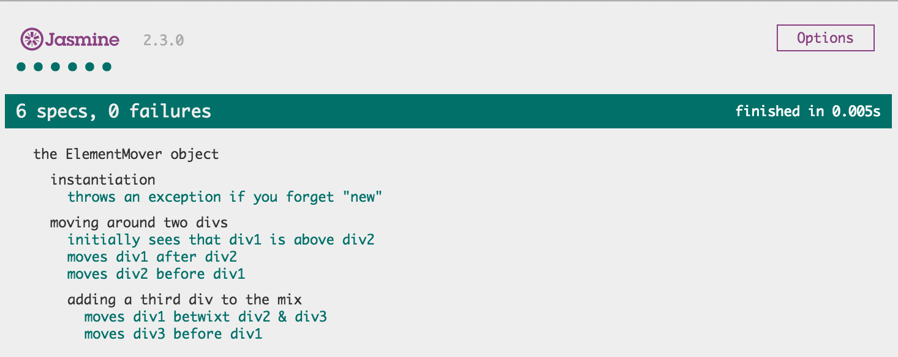
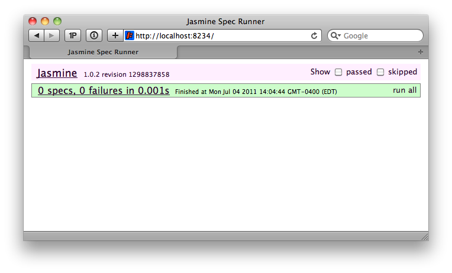

First run this:
mvn archetype:generate -DarchetypeGroupId=com.github.searls -DarchetypeArtifactId=jasmine-archetype -DarchetypeVersion=2.0-beta-02 -DgroupId=com.acme -DartifactId=my-jasmine-project -Dversion=0.0.1-SNAPSHOT
And then this:
cd my-jasmine-project && mvn jasmine:bdd
Then go here and you should see
If you're already familiar with adding Maven plugins to POM files, then this should be a breeze. If it's new to you, then take a deep breath and contemplate adding this XML to your project's "pom.xml" file:
<build>
…
<plugins>
…
<plugin>
<groupId>com.github.searls</groupId>
<artifactId>jasmine-maven-plugin</artifactId>
<version>2.0-beta-02</version>
<executions>
<execution>
<goals>
<goal>test</goal>
</goals>
</execution>
</executions>
<configuration>
<!-- configuration properties will go here -->
</configuration>
</plugin>
…
</plugins>
…
</build>Ready to try it out? Once you've added the plugin to your project, just run the following in a terminal:
mvn jasmine:bdd
You should see some output like this
[INFO] Server started--it's time to spec some JavaScript! You can run your specs as you develop by visiting this URL in a web browser: http://localhost:8234 The server will monitor these two directories for scripts that you add, remove, and change: source directory: src/main/javascript spec directory: src/test/javascript Just leave this process running as you test-drive your code, refreshing your browser window to re-run your specs. You can kill the server with Ctrl-C when you're done.
Now visit http://localhost:8234 in your browser of choice and you should see a Jasmine spec runner with 0 specs, 0 failures. Sort of like this one:
And that's it! When you add source scripts to the source directory and spec scripts to the specs directory and refresh the page, your specs will be executed.
Running the jasmine:bdd goal and refreshing an actual browser will always provide substantially faster feedback than the headless jasmine:test goal. As a result, I strongly recommend you use it to drive development of your JavaScript and only worry about running the headless execution when you would otherwise perform full Maven builds (like before you push your code or in CI).
If you've added the plugin as shown above (that is, with an execution of the test goal) to your POM, it's already set up execute your Jasmine specs every time your build goes through the test lifecycle phase!
So when you run this:
mvn clean test
A happy build might output:
[INFO] Executing Jasmine Specs
[INFO]
-------------------------------------------------------
J A S M I N E S P E C S
-------------------------------------------------------
[INFO]
the ElementMover object
instantiation
throws an exception if you forget "new"
moving around two divs
initially sees that div1 is above div2
moves div1 after div2
moves div2 before div1
adding a third div to the mix
moves div1 betwixt div2 & div3
moves div3 before div1
Results: 6 specs, 0 failures
[INFO] ------------------------------------------------------------------------
[INFO] BUILD SUCCESS
[INFO] ------------------------------------------------------------------------
[INFO] Total time: 4.607s
[INFO] Finished at: Mon Jul 04 15:01:58 EDT 2011
[INFO] Final Memory: 9M/81M
[INFO] ------------------------------------------------------------------------And a failing build might output:
[INFO] Executing Jasmine Specs
[INFO]
-------------------------------------------------------
J A S M I N E S P E C S
-------------------------------------------------------
[INFO]
HelloWorld
should say hello
wins
wins
wins
loses <<< FAILURE!
* Expected 'sad' to be 'panda'.
1 failure:
1.) HelloWorld it loses <<< FAILURE!
* Expected 'sad' to be 'panda'.
Results: 5 specs, 1 failures
[INFO] ------------------------------------------------------------------------
[INFO] BUILD FAILURE
[INFO] ------------------------------------------------------------------------
[INFO] Total time: 4.020s
[INFO] Finished at: Mon Jul 04 15:03:47 EDT 2011
[INFO] Final Memory: 8M/81M
[INFO] ------------------------------------------------------------------------The plugin relies on HtmlUnit for headless (which is to say, GUI-less) execution. It's not a perfect emulation of a browser, but for moderately well-isolated unit testing (e.g. only pedestrian interactions with the DOM), it works really well.